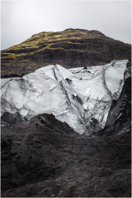
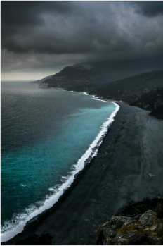
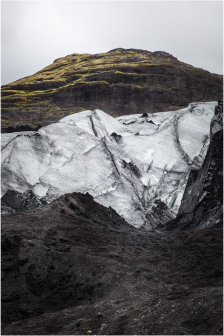
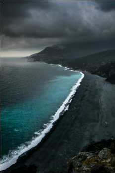

Investigaciones

1Criobiología
La criobiología es la rama de la biología que estudia los efectos de baja temperaturas en seres vivos. La palabra criobiología es derivada de la palabra griega κρῧος [kryos], "frío", βίος [bios], "vida", y λόγος [logos], "palabra". En la práctica, criobiología es el estudio de material o sistemas biológicos a temperaturas más bajas que las normales. Los materiales o sistemas estudiados pueden incluir proteínas, células, tejidos, órganos, u organismos completos. Las temperaturas pueden oscilar desde condiciones de hipotermia moderada hasta temperaturas criogénicas.
2Crioterapia
La crioterapia también se denomina criocirugía, crioablación, crioterapia percutánea, o terapia de crioablación dirigida. Es un tratamiento mínimamente invasivo que usa un frío intenso para congelar y destruir un tejido enfermo, incluyendo las células cancerosas. Los médicos utilizan la crioterapia para tratar varias condiciones de la piel, como así también tumores adentro del hígado, los riñones, los huesos, los pulmones y los senos.
Tratamientos

1Criopreservación
La criopreservación es el proceso en el cual las células o tejidos son congelados a muy bajas temperaturas, generalmente entre -80 °C y -196 °C (el punto de ebullición del nitrógeno líquido) para disminuir las funciones vitales de una célula o un organismo y poderlo mantener en condiciones de vida suspendida por mucho tiempo. A esas temperaturas, cualquier actividad biológica, incluidas las reacciones bioquímicas que producirían la muerte de una célula, quedan efectivamente detenidas. Los métodos de criopreservación buscan alcanzar bajas temperaturas sin causar daños adicionales causados por la formación de hielo durante la congelación.
2Sanación en el hielo
El hielo disminuye la circulación, la actividad metabólica y la inflamación y adormece la piel. También disminuye el dolor, la inflamación, la hinchazón y los calambres musculares. La rápida aplicación de frío provoca una disminución en la producción de mediadores químicos que causan la inflamación. Esto disminuye de aproximadamente en un 70 a 80% la cantidad de sustancias algogénicas (que provocan inflamación y dolor), por lo que se da una reacción inflamatoria menos intensa.
Análisis
1Células madre
La criopreservación permite que las células madre estén disponibles en cualquier momento y puedan ser descongeladas fácilmente para su uso en caso de necesidad, en el tratamiento de diversas enfermedades.
2Tejidos
En el mundo de la reproducción asistida, la criopreservación ha sido una técnica que ha marcado un antes y un después, con la posibilidad de conservación de gametos.
Infraestructura
1Centros de investigación
Los centros de investigación se encuentran en la parte superior de la isla. Las muestras provenientes de ellos se almacenan en la parte subterránea.
2Centros de análisis
La zona de almacenaje de análisis está en la parte subterránea de la isla, dónde se desarrolla el 80% de la vida de los Koldumenses.
Habitantes

1Koldumenses
Los Koldumenses son una comunidad muy unida y protectora entre sus pares. Desconfían de los extranjeros, pero interactúan cuidadosamente con ellos porque piensan que compartir sus conocimientos es para un bien mayor. Algunas de las profesiones en las que se desempeñan incluyen doctor, investigador, cosechador, arquitecto, ingeniero, etc.
La isla

 


